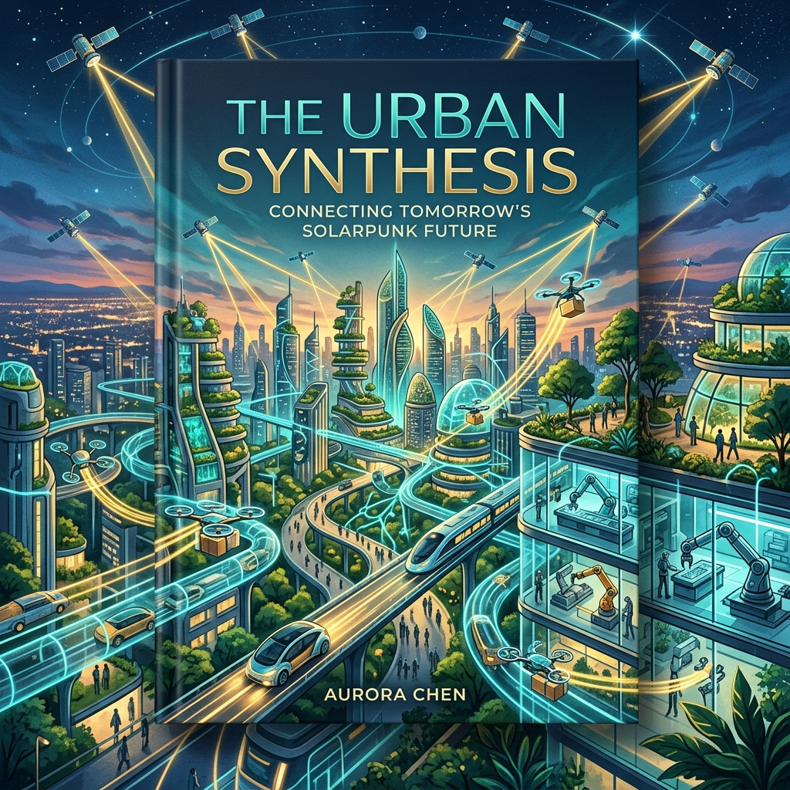

« "Le problème n'est jamais la technologie isolée. Le problème est la conjonction de plusieurs technologies qui arrivent ensemble et qui tirent toutes sur les mêmes ressources." Réflexion d'un ingénieur en systèmes complexes »

Leipzig, Allemagne. Une usine de logistique. Mars 2026.
L'entrepôt fait 80 000 mètres carrés. Il n'y a presque personne. Des couloirs blancs immaculés, des étagères qui montent jusqu'à 15 mètres de hauteur, et des centaines de robots orange qui circulent en silence selon des trajectoires calculées à la milliseconde par des algorithmes d'optimisation. Ils saisissent, déplacent, déposent, en continu, 24 heures sur 24, sept jours sur sept. Quelques humains supervisent depuis un pupitre de contrôle vitré en mezzanine, moins pour intervenir que pour surveiller.
Cet entrepôt consomme 4,2 mégawatts en fonctionnement normal. C'est la consommation d'un gros village. Le gestionnaire du site me l'explique avec une certaine fierté : l'efficacité par colis traité est deux fois meilleure qu'il y a cinq ans, le taux d'erreur est presque nul, la cadence a triplé avec un personnel humain divisé par huit. Personne autour de nous n'a l'air de trouver cela préoccupant.
Quand je lui demande d'où vient l'électricité, il me répond qu'ils sont engagés dans un Power Purchase Agreement avec un parc éolien en mer du Nord. Je lui demande ce qui se passe les jours sans vent, quand l'éolien produit 20 % de sa capacité nominale. Il hésite un peu. Le contrat prévoit une compensation sur l'année, explique-t-il. En pratique, ces jours-là, c'est le réseau allemand qui fournit le complément. Et le réseau allemand, ces jours-là, brûle du charbon.
Je ne rapporte pas cet échange pour accuser le gestionnaire de cette usine, qui fait son travail honnêtement et qui a fait des choix bien meilleurs que la plupart de ses concurrents. Je le rapporte parce qu'il illustre parfaitement le problème central de ce chapitre. Ce n'est pas l'entrepôt robotisé qui pose un problème systémique. C'est le fait que cet entrepôt existe maintenant dans un monde où, simultanément, des millions de requêtes d'IA sont traitées chaque seconde, où des centaines de milliers de véhicules électriques rechargent leurs batteries chaque soir, où des milliers de satellites en constellation téléchargent leurs données vers des stations terrestres, où des millions de foyers ont installé des pompes à chaleur qui consomment l'électricité que le fioul brûlait autrefois.
Ces révolutions technologiques sont toutes excellentes, prises séparément. Ensemble, et arrivant en quelques années plutôt qu'en quelques décennies, elles créent une pression sur les systèmes électriques mondiaux qui n'a pas d'équivalent dans l'histoire récente. C'est ce que j'appelle l'inflation des besoins convergents.
La robotisation industrielle : le travail humain remplacé par des kilowatts
Il y a une équation que l'on formule rarement dans les débats sur l'automatisation, parce qu'elle révèle quelque chose de gênant. Quand un robot remplace un être humain dans une tâche industrielle, il n'élimine pas l'énergie nécessaire à cette tâche. Il la transforme. L'énergie calorique que l'humain tirait de sa nourriture est remplacée par de l'énergie électrique que le robot tire du réseau.
Et le robot consomme généralement plus. Un travailleur humain mobilise, en effort physique soutenu, entre 100 et 500 watts. Un bras robotisé industriel de type courant consomme entre 3 000 et 20 000 watts selon sa taille et sa puissance. Un robot mobile de logistique comme ceux de l'entrepôt de Leipzig consomme entre 1 000 et 3 000 watts en déplacement. Les systèmes IA embarqués qui les guident, les capteurs qui leur permettent de percevoir leur environnement, les serveurs centraux qui coordonnent leurs trajectoires, tout cela s'additionne.
À l'échelle d'une usine, la transformation est spectaculaire. Une usine manufacturière traditionnelle avec 500 ouvriers consomme une certaine quantité d'énergie pour la production. La même usine après robotisation intensive, avec 50 superviseurs humains et 500 robots, peut facilement consommer deux à quatre fois plus d'électricité, même si elle est immensément plus productive par unité fabriquée.
Le chiffre global donne le vertige quand on l'extrapole. L'International Federation of Robotics estimait en 2025 que le stock mondial de robots industriels avait franchi les quatre millions et demi d'unités, avec une croissance annuelle d'environ 10 %. Les projections pour 2030 évoquent sept à dix millions d'unités. Si l'on prend une consommation moyenne modeste de 3 kW par robot sur 6 000 heures de fonctionnement annuelles, la consommation électrique de ce parc robotique mondial représente une grandeur comparable à la consommation totale d'un pays de taille moyenne.
L'IA qui pilote les robots, et les robots qui alimentent l'IA
La relation entre l'IA et la robotisation n'est pas simplement additive. Elle est mutuellement amplificatrice, ce qui rend les projections encore plus incertaines.
Les robots modernes sont de plus en plus IA-pilotés. Ils ne suivent plus des trajectoires préprogrammées rigides. Ils perçoivent leur environnement, prennent des décisions en temps réel, s'adaptent à des situations imprévues. Cette intelligence embarquée a un coût en calcul, donc en électricité. Un robot de soudure à trajectoire fixe de 2010 consommait son énergie presque entièrement en force mécanique. Un robot de manipulation à vision 3D et apprentissage par renforcement de 2025 consacre une part significative de sa consommation à ses processeurs de vision et de décision.
Et dans l'autre sens, les robots génèrent des données. Des données sur leurs cycles de fonctionnement, leurs anomalies, leurs environnements, leurs performances. Ces données sont envoyées vers des plateformes cloud pour être analysées par des modèles IA qui optimisent leur maintenance, leur programmation, leurs interactions mutuelles. Chaque robot est un producteur de données qui nourrit des serveurs qui consomment de l'électricité.
Nous sommes en train de construire un système où les machines alimentent les machines en données, et où les données alimentent d'autres machines en décisions, et où tout cela consomme de l'électricité à chaque maillon de la chaîne. C'est un progrès réel. C'est aussi un multiplicateur de consommation énergétique que personne ne comptabilise dans son ensemble.
L'usine du futur et son raccordement électrique
Il y a un détail pratique que les promoteurs de l'industrie 4.0 mentionnent rarement dans leurs présentations : avant de déployer des robots, il faut souvent renforcer le raccordement électrique du site. Une usine qui passe d'une main-d'oeuvre humaine à une automation intensive peut voir sa demande de puissance électrique doubler ou tripler. Cela implique un nouveau contrat avec le gestionnaire de réseau, parfois une nouvelle ligne de transformation haute tension, parfois des délais de plusieurs années dans les zones où le réseau est saturé.
Ce n'est pas une anecdote marginale. C'est un frein réel et documenté au déploiement de l'industrie automatisée dans certaines régions. Les industriels qui ont voulu déployer rapidement des usines très automatisées en France ou en Allemagne ces dernières années ont parfois découvert que le raccordement électrique nécessaire prenait trois à cinq ans à obtenir. L'infrastructure physique du réseau électrique, conçue pour une demande industrielle d'une autre époque, ne suit pas le rythme de transformation.
Les véhicules autonomes : la voiture qui pense consomme plus
San Francisco, quartier de Mission. Une nuit de 2025.
Une Waymo glisse silencieusement le long du trottoir pour prendre en charge son passager. Pas de chauffeur. Le véhicule a navigué seul depuis son dépôt, géré sa place dans la circulation, anticipé les piétons, les cyclistes, les doubles files. Tout cela en temps réel, grâce à un empilement de technologies de perception et de calcul qui font de cette voiture quelque chose de fondamentalement différent d'un simple véhicule électrique.
Sur le toit, un lidar rotatif qui émet et reçoit des millions d'impulsions laser par seconde pour cartographier l'environnement à 360 degrés. Sur les flancs et le capot, une douzaine de caméras haute résolution dont les images sont traitées en temps réel. Des radars longue portée pour détecter les obstacles à distance. À bord, plusieurs dizaines de kilogrammes de processeurs qui digèrent en continu ce flux de données pour produire une compréhension de la situation et des décisions de conduite.
Tout cela consomme de l'électricité. Beaucoup.
La taxe cognitive du véhicule autonome
Un véhicule électrique ordinaire de 2025, une Tesla Model 3 ou une Renault Mégane électrique, consomme entre 15 et 20 kilowattheures aux 100 kilomètres pour se déplacer. Cette consommation couvre l'énergie nécessaire à la propulsion du véhicule, le chauffage ou la climatisation, l'éclairage, la radio.
Un véhicule autonome de niveau 4 ou 5, capable de conduire sans intervention humaine dans la plupart des conditions, embarque une suite de capteurs et de processeurs qui consomment en permanence entre 1 000 et 3 000 watts supplémentaires, selon les estimations disponibles pour les systèmes déployés en 2025-2026. Sur une heure de trajet à 60 km/h, c'est 1 à 3 kilowattheures supplémentaires consacrés à la seule fonction de perception et de décision. Sur 100 kilomètres, la surconsommation liée à l'autonomie peut représenter 10 à 30 % de la consommation totale du véhicule.
Ce n'est pas négligeable. Et c'est une consommation qui ne disparaît pas à l'arrêt : un véhicule autonome maintient souvent ses systèmes partiellement actifs même en stationnement, pour rester disponible rapidement.
Les ingénieurs qui travaillent sur ces systèmes le savent et y travaillent. Waymo, Cruise, Mobileye et leurs concurrents ont des équipes entières dédiées à la réduction de la consommation de leurs suites sensorielles. Les progrès sont réels : les systèmes de 2025 consomment moins que ceux de 2020 pour des performances bien supérieures. Mais l'effet Jevons joue à plein ici aussi. À mesure que les coûts baissent, les déploiements s'étendent, et la consommation totale de la flotte augmente.
L'infrastructure invisible derrière le véhicule
La consommation du véhicule autonome lui-même n'est qu'une partie de l'histoire. Ce que l'on voit moins facilement, c'est l'infrastructure numérique qui le soutient.
Une flotte de robotaxis comme celle de Waymo à San Francisco génère en permanence des téraoctets de données par véhicule et par heure. Ces données sont transmises vers des data centers où elles sont stockées, analysées, utilisées pour améliorer les modèles de conduite, signaler les anomalies, gérer la maintenance préventive. Les cartes haute définition utilisées par les systèmes de navigation autonome doivent être continuellement mises à jour, ce qui requiert des serveurs qui traitent en continu les images de centaines de véhicules de cartographie.
La communication entre les véhicules autonomes et leur infrastructure cloud mobilise aussi des ressources réseau considérables. En 5G, le débit descendant vers le véhicule et ascendant depuis le véhicule peut être substantiel. Quand on multiplie par des milliers de véhicules simultanément actifs dans une agglomération, on arrive à des volumes de données qui sollicitent significativement les réseaux cellulaires et les serveurs de traitement.
Les promoteurs du véhicule autonome avancent des arguments valides sur les gains potentiels d'efficacité systémique. Un trafic autonome coordonné consomme moins d'énergie qu'un trafic humain erratique, grâce à l'écoconduite permanente, à la suppression des freinages inutiles, à l'optimisation des trajectoires. Ces gains sont réels. Ils ne compensent pas entièrement la surconsommation des systèmes embarqués et de l'infrastructure, mais ils atténuent le bilan net.
Ce qui est certain, en revanche, c'est que le déploiement massif de véhicules autonomes, que certaines projections anticipent à plusieurs dizaines de millions d'unités mondiales dans les dix prochaines années, ajoutera une demande électrique substantielle à un réseau déjà sollicité. Et que cette demande sera difficile à prévoir avec précision parce qu'elle dépend de comportements d'usage qui restent largement inconnus.
La constellation de satellites : internet du ciel et ses consommations terrestres
Starlink est l'un des projets les plus spectaculaires de la décennie. En quelques années, SpaceX a déployé plus de 10 000 satellites en orbite basse terrestre, créant un réseau de couverture internet mondiale qui atteint des zones restées sans connexion haut débit depuis l'invention d'internet. Des villages reculés d'Amazonie, des îles du Pacifique, des zones de guerre en Ukraine. C'est une réussite technologique et logistique réelle.
Mais Starlink n'est pas seul. Amazon prépare sa constellation Kuiper, avec 3 200 satellites prévus. OneWeb, racheté par Eutelsat, en a plusieurs centaines en orbite. La Chine développe sa propre méga-constellation, Guowang, avec des ambitions de 12 000 satellites. D'autres projets existent en développement dans plusieurs pays. Si l'ensemble de ces projets se concrétise selon leurs plans annoncés, l'orbite basse terrestre pourrait accueillir 50 000 satellites d'ici 2030, contre environ 15 000 aujourd'hui toutes catégories confondues.
L'énergie solaire en orbite... et les stations terrestres qui compensent
Les satellites eux-mêmes ne consomment pas l'électricité du réseau terrestre. Ils fonctionnent à l'énergie solaire, captée par leurs panneaux photovoltaïques dans l'espace. Mais leur déploiement et leur opération impliquent une infrastructure terrestre considérable qui, elle, est branchée sur le réseau.
Chaque satellite Starlink communique avec des stations terrestres, des terminaux au sol qui relaient le signal entre l'espace et le réseau internet terrestre. Ces stations consomment de l'électricité en permanence. Le terminal utilisateur lui-même, l'antenne parabolique plate que les abonnés installent sur leur toit, consomme entre 50 et 150 watts en fonctionnement, soit deux à six fois plus qu'un routeur wifi classique.
Avec plusieurs millions d'abonnés actifs en 2026, la consommation agrégée des seuls terminaux Starlink représente déjà une puissance installée de plusieurs centaines de mégawatts. Ajoutez les stations de passerelle, les centres de contrôle, les systèmes de traitement des données, et le bilan de la constellation devient significatif.
Et les lancements. Chaque lancement de Falcon 9 envoie 25 satellites Starlink de nouvelle génération en orbite et consomme environ 500 tonnes de propergol. Le Falcon Heavy et le Starship, qui emportent des charges plus lourdes, ont des bilans proportionnellement plus importants. SpaceX réalise environ 150 lancements par an en 2025-2026, toutes missions confondues. Ce chiffre va croître. La conversion en équivalent CO₂ des émissions de kérosène (le méthane de Starship est en principe plus propre, mais sa production pose ses propres questions) n'est pas une quantité négligeable à l'échelle d'une constellation de plusieurs milliers de satellites qui nécessite un renouvellement régulier.
Les débris et la pollution orbitale : une ressource non renouvelable
Il y a une dimension souvent absente des bilans environnementaux des méga-constellations : l'espace orbital lui-même est une ressource limitée.
L'orbite basse terrestre, entre 400 et 1 200 kilomètres d'altitude, est la zone la plus accessible et la plus utile pour les satellites de communication à faible latence. C'est aussi une zone où la densité de débris spatiaux augmente rapidement. Chaque satellite hors service, chaque fragment issu d'une collision ou d'une explosion, contribue à un nuage de débris qui menace l'ensemble des autres satellites. Le phénomène de Kessler, théorisé dans les années 1970, décrit le scénario catastrophe où les collisions en cascade rendent l'orbite basse inutilisable pour des décennies.
Nous n'en sommes pas là. Mais les agences spatiales et les astronomes professionnels tirent des sonnettes d'alarme sur la densification rapide de l'orbite basse. SpaceX intègre dans ses satellites des systèmes de désorbitation en fin de vie, ce qui est un progrès réel. Mais si dix acteurs déploient chacun des milliers de satellites, la gestion du trafic orbital devient un problème de gouvernance internationale que personne n'a encore résolu.
L'espace orbital est, en un sens, une ressource commune planétaire. Comme les fonds marins, comme l'atmosphère. Et comme ces autres communs, il peut être dégradé au-delà du point de récupération si les décisions d'utilisation sont laissées uniquement à l'initiative individuelle des acteurs privés.
Une méga-constellation de satellites est d'une certaine façon l'exact équivalent spatial d'un data center : une infrastructure considérable déployée rapidement pour répondre à un besoin réel, avec des externalités qui ne figurent pas dans le bilan comptable de l'opérateur.
Les réseaux de communication : plus rapides, plus nombreux, plus gourmands
La 5G a été vendue aux consommateurs et aux gouvernements principalement sous l'angle de ses performances : débits jusqu'à dix fois supérieurs à la 4G, latence réduite à quelques millisecondes, capacité à connecter des millions d'objets par kilomètre carré. Ces performances sont réelles. Ce que la communication marketing a omis de mentionner avec la même clarté, c'est ce qu'elles coûtent en énergie.
Une antenne 5G consomme en fonctionnement entre deux et quatre fois plus d'énergie qu'une antenne 4G. Cela tient principalement au fait que la 5G utilise des fréquences plus élevées qui ont une portée plus faible, ce qui oblige à déployer beaucoup plus d'antennes pour couvrir la même surface géographique. La 5G millimétrique, qui offre les débits les plus élevés, a une portée de quelques dizaines de mètres seulement et nécessite une densité d'antennes extrêmement élevée en milieu urbain.
Les opérateurs télécoms ont bien conscience de ce problème. Orange, SFR, Deutsche Telekom, tous publient des engagements sur l'efficacité énergétique de leurs réseaux. Et il est vrai que l'efficacité par gigabit transmis s'améliore : on transmet plus de données pour le même watt. Mais la demande en données progresse encore plus vite que cette efficacité, et la consommation électrique totale des réseaux de communication continue de croître.
La 6G arrive, et ses prédécesseurs sont déjà là
La 6G est déjà en recherche active. Les laboratoires des grands équipementiers télécoms, Nokia, Ericsson, Huawei, Samsung, travaillent sur les technologies qui équiperont les réseaux de la fin des années 2020 et du début des années 2030. Les premières spécifications officielles sont attendues autour de 2028-2030, avec des déploiements commerciaux vers 2030-2032 dans les pays pionniers.
Les ambitions sont considérables. Des débits théoriques un million de fois supérieurs à la 4G. Une latence inférieure à la milliseconde. Une connectivité de masse pour les systèmes cyber-physiques, usines intelligentes, villes intelligentes, interfaces cerveau-machine. La 6G est conçue pour être l'infrastructure des systèmes de l'IA distribuée, où l'intelligence n'est plus centralisée dans des data centers mais répartie entre des milliards d'appareils connectés.
Ces ambitions ont un coût énergétique qui fait l'objet de travaux de recherche actifs mais dont les résultats restent incertains. On sait que les fréquences térahertz envisagées pour la 6G ont une portée encore plus faible que les fréquences millimétriques de la 5G, ce qui implique des densités d'antennes encore plus élevées. On sait que les puissances de traitement nécessaires seront considérables. On ne sait pas encore si les technologies de puces et de protocoles en développement permettront de contenir la consommation dans des limites raisonnables.
Le paradoxe de la dématérialisation
Il y a une idée reçue tenace dans les discours sur la transition numérique, l'idée que le numérique remplace du physique et que donc, par définition, il économise des ressources. On ne prend plus l'avion pour une réunion, on la fait par visioconférence. On ne s'achète plus de CD, on écoute de la musique en streaming. On ne photocopie plus de documents, on les partage en cloud.
Ces substitutions existent et produisent parfois des gains réels. Mais elles s'accompagnent systématiquement d'un effet d'augmentation de la demande qui compense partiellement ou totalement le gain. La visioconférence n'a pas remplacé les voyages d'affaires : elle s'y est ajoutée, en permettant d'avoir des réunions avec des interlocuteurs avec lesquels on n'aurait jamais pris l'avion. Le streaming musical n'a pas réduit la consommation musicale : il l'a multipliée, en rendant accessible une bibliothèque qui a fait passer l'écoute moyenne par personne et par jour à des niveaux jamais atteints. La dématérialisation crée des services, et ces services créent de nouvelles demandes.
Les réseaux de communication sont le vecteur de cette dynamique. Plus ils sont rapides et disponibles, plus ils permettent d'usages intensifs, et plus leur propre consommation croît. C'est un cercle vertueux pour les utilisateurs et les économies. C'est un cercle qui demande une attention particulière du côté des ressources énergétiques.
Le stockage de données : une demande qui ne s'arrête jamais
En 1980, la totalité des données stockées dans le monde était estimée à quelques centaines de gigaoctets. En 2025, la production mondiale annuelle de données dépasse les 100 zettaoctets, soit cent milliards de téraoctets. La croissance de cette production est elle-même exponentielle. Et chaque octet produit doit être stocké quelque part, au moins temporairement.
Le stockage de données est l'une des activités les plus discrètes de l'industrie numérique, mais pas l'une des moins énergivores. Un disque SSD de centre de données consomme entre 1 et 5 watts en fonctionnement. Un disque dur magnétique traditionnel consomme 5 à 15 watts. Dans un serveur de stockage haute densité qui peut contenir plusieurs dizaines de disques, on arrive vite à des centaines de watts par unité de rack, et les data centers modernes alignent des milliers d'unités.
La mémoire rapide : le goulot qui freine l'IA
Pour comprendre pourquoi la mémoire est au coeur des enjeux de l'IA, il faut comprendre une contrainte architecturale fondamentale des systèmes informatiques actuels : le goulot de la bande passante mémoire.
Un processeur moderne, qu'il soit un GPU de Nvidia ou un TPU de Google, peut effectuer des opérations à une vitesse vertigineuse. Mais cette vitesse de calcul n'est utile que si on peut alimenter le processeur en données suffisamment vite. Or le transfert des données depuis la mémoire vers les coeurs de calcul est le facteur limitant de la plupart des workloads IA. C'est ce qu'on appelle le memory bandwidth bottleneck.
La solution adoptée par l'industrie est la mémoire HBM, High Bandwidth Memory, qui empile verticalement des couches de mémoire DRAM directement sur le substrat du processeur et les connecte via des milliers de connexions très courtes, permettant des débits de données beaucoup plus élevés qu'une mémoire GDDR classique montée séparément. Le GPU H100 de Nvidia embarque 80 gigaoctets de mémoire HBM3 avec une bande passante de 3,35 téraoctets par seconde.
La fabrication de ces mémoires HBM est complexe, coûteuse, et concentrée chez deux ou trois fabricants mondiaux, principalement SK Hynix en Corée du Sud et Micron aux États-Unis. La demande explose et la capacité de production suit avec un décalage, créant des pénuries récurrentes qui freinent le déploiement de l'IA autant que la pénurie de GPU eux-mêmes.
Chaque H100 embarquant ses 80 gigaoctets de HBM3 consomme entre 300 et 700 watts en charge maximale, et les systèmes d'IA modernes alignent des centaines ou des milliers de ces puces. La consommation électrique des mémoires elle-même n'est pas la part dominante de ce total, mais elle n'est pas nulle, et à l'échelle de parcs de serveurs comptant des dizaines de milliers d'unités, elle compte.
La croissance du volume de données générées par l'IA elle-même
Il y a un phénomène que l'on anticipe mal, parce qu'il émerge de la dynamique propre de l'IA : les modèles d'intelligence artificielle sont devenus de gros producteurs de données, pas seulement de gros consommateurs.
Chaque image générée par Midjourney ou DALL-E pèse plusieurs mégaoctets. Chaque vidéo synthétique générée par Sora ou ses équivalents pèse plusieurs gigaoctets. Les transcriptions, analyses, rapports, synthèses produites par des agents IA s'accumulent dans des systèmes de gestion documentaire. Les logs de fonctionnement des modèles eux-mêmes, nécessaires au débogage, à l'amélioration continue et aux audits de sécurité, représentent des volumes considérables.
On entre dans un régime où l'IA produit de la data qui est stockée pour entraîner l'IA suivante, qui produit plus de data, qui est stockée pour entraîner l'IA suivante encore. Cette boucle récursive de production et de stockage est une des dynamiques les plus difficiles à modéliser dans les projections énergétiques, parce qu'elle dépend de l'évolution des usages autant que des capacités techniques.
L'effet système : quand les révolutions se superposent
J'ai présenté jusqu'ici les différentes composantes de l'inflation des besoins énergétiques de manière séparée : l'IA, la robotisation, les véhicules autonomes, les satellites, les réseaux, le stockage. Cette présentation est commode pour expliquer, mais elle est trompeuse si elle donne l'impression que ces révolutions sont indépendantes l'une de l'autre.
En réalité, elles se nourrissent mutuellement. L'IA pilote les robots, et les robots génèrent des données pour l'IA. Les véhicules autonomes utilisent les réseaux 5G pour communiquer avec leur infrastructure cloud, et les satellites Starlink pour naviguer dans les zones sans couverture terrestre. Les satellites produisent des données qui sont stockées dans des data centers alimentés par des énergies dont la gestion est optimisée par des algorithmes d'IA. Chaque révolution amplifie les autres.
Ce couplage crée ce que les ingénieurs en systèmes complexes appellent une demande correlated, une demande dont les pics sont synchronisés et se renforcent mutuellement plutôt que de se lisser dans le temps. Un réseau électrique est d'autant plus facile à gérer que les demandes de ses différents consommateurs sont désynchronisées, les uns augmentant leur consommation quand les autres la diminuent. Un réseau où toutes les grandes catégories de consommateurs augmentent leur demande en même temps est un réseau sous tension permanente.
Le risque du réseau en 2026 : l'Europe vue de l'intérieur
En Europe, et particulièrement en France et en Allemagne, les gestionnaires de réseau électrique ont commencé à exprimer publiquement, avec la prudence diplomatique propre aux institutions, des préoccupations sur l'adéquation des capacités de production et de transport électrique avec la demande projetée.
RTE, le gestionnaire du réseau de transport électrique français, publie des bilans prévisionnels annuels qui modélisent l'équilibre offre-demande à dix ans. Les éditions les plus récentes signalent que sous certains scénarios de déploiement accéléré des usages électriques (véhicules électriques, pompes à chaleur, data centers), la France pourrait connaître des situations de tension sur son réseau dans la seconde moitié des années 2020 et au début des années 2030, notamment pendant les hivers froids où la demande résidentielle est élevée.
L'Allemagne, qui a accéléré sa sortie du nucléaire et se retrouve maintenant avec un mix électrique plus carboné et plus dépendant de l'intermittence des renouvelables, affronte ces défis de manière plus aiguë. La Großwetterlage, les grandes configurations météorologiques qui peuvent réduire simultanément la production éolienne sur toute l'Europe du Nord pendant plusieurs jours, est un facteur de risque documenté pour la sécurité d'approvisionnement électrique européenne.
La Grande-Bretagne, l'Irlande, les Pays-Bas, tous les pays qui hébergent des concentrations importantes de data centers européens ont dès 2024-2025 commencé à imposer des conditions plus strictes à l'implantation de nouvelles infrastructures numériques, exactement pour ces raisons d'équilibre du réseau électrique.
Le chiffre global : ce que personne ne veut additionner
Additionner les projections de consommation électrique supplémentaire de tous ces secteurs est un exercice qui donne des chiffres vertigineux, et que je présente avec les précautions méthodologiques qui s'imposent : les projections à dix ans dans des domaines à évolution aussi rapide sont des outils de réflexion, pas des prédictions.
Ceci étant posé, les ordres de grandeur issus des études les plus sérieuses disponibles en 2026 sont les suivants. Les data centers IA mondiaux : croissance annuelle de leur demande électrique estimée entre 200 et 400 TWh par an d'ici 2030. La robotisation industrielle mondiale : 100 à 300 TWh additionnels par an d'ici 2030. Les véhicules électriques incluant les flottes autonomes : 500 à 1 000 TWh additionnels par an d'ici 2030 en Europe, Chine et Amérique du Nord. Les réseaux 5G en déploiement mondial : 100 à 200 TWh additionnels par an. Le stockage et les réseaux de communication : 50 à 150 TWh additionnels par an.
Ces chiffres sont exprimés en demande annuelle additionnelle, c'est-à-dire ce qui s'ajoute à la demande actuelle. Même en prenant les fourchettes basses, la demande électrique mondiale pour ces usages technologiques va croître de plusieurs centaines de TWh par an chaque année pendant la prochaine décennie. Pour donner une échelle : la production électrique totale de la France en 2025 est d'environ 500 à 550 TWh par an.
Nous allons avoir besoin, dans les dix prochaines années, d'une capacité électrique propre supplémentaire qui représente plusieurs fois la production totale de la France actuelle, et cela uniquement pour alimenter la transformation technologique dont nous sommes en train d'être les témoins et les acteurs. Le reste des besoins énergétiques, l'industrie traditionnelle, le chauffage, les transports non électrifiés, est en sus.
Pourquoi cela est possible, à quelles conditions
Je ne veux pas laisser ce chapitre sur une note exclusivement alarmiste, parce que ce serait intellectuellement malhonnête. Ces besoins sont réels. Ils ne sont pas insurmontables.
L'humanité a connu d'autres moments où sa demande en énergie semblait dépasser ses capacités à la satisfaire. La révolution industrielle a nécessité des capacités énergétiques qui paraissaient extravagantes aux observateurs du XVIIIe siècle. L'électrification de masse du XXe siècle a requis des investissements en infrastructure que personne n'avait imaginés une génération plus tôt. Dans les deux cas, la réponse a été une combinaison d'innovation technologique et de volonté politique et collective.
Aujourd'hui, les technologies disponibles pour répondre à ce défi existent ou sont en développement avancé : le nucléaire de nouvelle génération, les renouvelables à coût en chute libre, les réseaux électriques intelligents, le stockage de grande capacité, les puces de plus en plus efficaces, les algorithmes d'entraînement qui font plus avec moins. Le chapitre 4 de ce livre est entièrement consacré à ces réponses technologiques, avec un regard honnête sur leurs délais et leurs limites.
Mais ces solutions demandent du temps, de l'argent, et surtout une volonté collective organisée. Elles ne se déploieront pas toutes seules, portées par la main invisible du marché. L'histoire des grandes infrastructures énergétiques est l'histoire d'un mélange de capital privé et de décision publique, de réglementation, de planification sur des horizons de vingt ou trente ans. C'est précisément ce dont nous avons le plus besoin, et ce qui manque le plus dans notre paysage politique actuel, lequel est encore souvent incapable de planifier au-delà du prochain cycle électoral.
La suite de ce livre explore ces questions plus en détail. Mais avant d'examiner les solutions, il faut comprendre où et pourquoi le système actuel bloque. C'est l'objet du chapitre suivant, consacré aux goulots d'étranglement réels : les endroits précis où la physique, la géographie et la géopolitique imposent des limites que l'argent seul ne peut pas effacer.
Sources et notes :
* Stock IFR 2024 : 4 664 000 robots (World Robotics 2025, IFR, sept. 2025). Croissance 2024 : +9 % ; moyenne depuis 2019 : +11 %/an.
* Constellation Starlink : >10 000 satellites actifs en orbite basse atteint en mars 2026 (Scientific American, Orbital Radar). Total toutes catégories en LEO : ~15 000 (mai 2026).
* Lancements Falcon 9 V2 Mini : 24-29 satellites par mission en 2025-2026 (Spaceflight Now, SpaceX Progress Report 2025). Propergol total : ~500 t (Falcon 9 User's Guide, SpaceX). Cadence de lancement : 167 lancements Falcon 9 en 2025 (SpaceXNow).
Chapitre suivant :
Les goulots d'étranglement
Là où le monde physique dit non